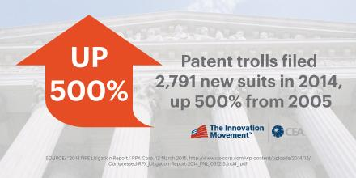

07.16.15
In the Media and in Politics, Everyone Talks About Patent Trolls, Not Patent Scope

Summary: A long critique of media coverage on patents over this past week
TECHRIGHTS has for many years complained about bias in the media (especially the corporate media) where the views of corporations about patents outweigh or completely marginalise the views of people. To large corporations, especially those which are based in the United States, patent trolls have become a major source of nuisance and a cause for financial damage. This, in our view (for which we provided very extensive evidence), is why the world’s biggest media outlets — and with them politicians who follow the ‘mainstream’ media — target “patent trolls” like nothing else. The lobbying has basically expanded to the press, as is the case in many other areas, not just patents.
“Software patents are hardly a speakable subject and patent scope in general is relegated to ‘specialist’ sites.”Today we wish to cover rather than ignore the zeitgeist/news cycle which relates to patents. It’s all just trolls, trolls, trolls. Software patents are hardly a speakable subject and patent scope in general is relegated to ‘specialist’ sites. It’s truly a shame, but that’s where we’re at. We can only hope to change that.
Lex Machina has just shown a massive growth in patent litigation, having previously shown a massive decline that was widely reported on (we too covered it at the time). Here is the accompanying Lex Machina press release. There was also a report from (self-described) defensive patent aggregator Unified Patents, which came out at around the same time, leading to a lot of coverage and calls to take on patent trolls. To quote some headlines that dominate the press right now:
- “Patent trolls on the rise: Now up by 60 percent from the second half of 2014″
- “Patent litigation at record highs as reform debate heats up”
- “Report: Patent Troll Lawsuits Up 11% Versus Last Year”
- “The patent troll problem is getting worse”
- “Patent Trolls Dominate Technology Patent Lawsuits”
- “Report: Patent Trolls Dominate Technology Patent Lawsuits”
- “9 of 10 Tech Patent Lawsuits Are Filed by Patent Trolls”
- “Patent trolls are cleaning up in the US”
- “9 of 10 Tech Patent Lawsuits Are Filed by Patent Trolls”
- “Patent troll lawsuits head toward all-time high”
A lot of the above (not all) speaks about “patent trolls”, but is that really the debate we should be having? Should we not take a closer look at what type of patents they are using? It is almost always on software/algorithms/computer-implemented/”over the Internet”/other. These patents would not even be granted (as they are patent-ineligible) in the vast majority of the world.
Well, so much for ‘innovation’. The figures above are meaningful, but framing the problem as one pertaining to trolls (except big “trolls” like Microsoft and Apple) is misleading and commercially-motivated. In turn, since commercial entities control politics in the US, this become politically-motivated.
“After a Dip,” says Corporate Counsel, “Patent Litigation Is on the Rise,” but a lot of other headlines focus purely on patent trolls. Patent maximalists such as IAM (essentially patent lawyers) refrain from using the word trolls. This patent lawyers’ site makes it sound like good news (“US patent litigation is on the way up again”) and Dennis Crouch, another patent maximalist, says in Twitter that “US Legislative Patent Reform appears to be delayed until after the “Summer Recess.” Let the lobbying continue.”
“It is safe to state that there is strong bias there. It relates to how these parasites make a living.”Yup. “Let the lobbying continue.” IAM went as far as openly opposing reform against trolls and pretending it faces “the tough road”. Another patent maximalist (usually meaning patent lawyer who makes money from all this mess) wrote: “Fee shifting provisions are again front in center in both the Innovation Act in the House of Representatives and the PATENT Act in the Senate. With this in mind I thought it would be interesting to speak with Telscher on the record. He obliged. In part one of my interview with Telscher we discussed the back story of the case, how Octane Fitness was the little guy getting pushed around by the larger corporation. We discussed the problem of patent trolls, and started discussing litigating in the Eastern District of Texas.”
It is safe to state that there is strong bias there. It relates to how these parasites make a living. All these patent lawyers’ sites are still full of self-serving propaganda about patent reform, not just the status quo of software patents. Here is a patent lawyers’ site publishing the article “Lessons learnt from top entrepreneurial inventors” (as if patents are the same as entrepreneurship and innovation) and here is another patent lawyers’ site on “Possibility of More Reform Spurs Increase in Patent Case Filings” (i.e. more business from them, the lawyers).
We were a little struck by the lobbying done so openly in the media (see for example “Patent reform opponents make late pitch”, “A Measured Approach to Patent Reform Legislation”, and “Commentary: Federal “Innovation Act” trolls Florida businesses”). Some in the corporate media call “trolls” just “patent owners” and claim that: “While curbing abusive lawsuits is a noble goal, opponents worry a congressional push could stifle innovation and punish the wrong people.”
This article was originally published by Susan Decker from Wall Street media and it helps show who’s really against reform. Watch the lobbyists’ favourite outlet framing this as a budget issue. To quote: “A House bill to rein in abusive litigation tactics of so-called patent trolls will have an insignificant effect on the government’s budget, according to the Congressional Budget Office.”
Budget is not really at stake here. This is a sort of misdirection. “Patent trolls are infesting small hotels” is the title of another article, but the real pushers for reform are actually big businesses that don’t like to get bitten. They want exclusivity on patent aggression. It’s large corporations that pursue reform of this kind and have already watered it down accordingly, as we noted before [1, 2, 3, 4, 5, 6, 7, 8].
One of the best articles on this topic was composed by Mike Masnick (as is often the case because he has no stake in the outcome). “The good folks over at Unified Patent,” he wrote, “have a report out on the latest numbers, which suggest the decline in patent troll activities last year was merely a brief disturbance and that patent trolling has bounced back significantly.”
As we pointed out last week, politicians such as Jerry Ortiz have begun weighing in [1, 2] and their concern seem to often be large corporations as the “victims”. They are trying to shape this ‘reform’ according to the whims and goals of large corporations. Here is the lobbying from 3M’s “vice president and chief intellectual property counsel” who “chairs the Steering Committee of the Coalition for 21st Century Patent Reform.”
Why are these people steering policy in the first place? Their voices represent not the will of ordinary people.
Graphs showing where patent efforts are diverted to have even been published by Free/libre software-oriented sites in recent days (this is rare), stating that “numbers really get interesting when we compare the number of cases brought by NPEs with those brought by companies that actually make products covered by their patents. In the first half of this year, NPEs initiated 2,075 cases in District Court, compared with 975 initiated by non-NPEs. While the cases being brought by non-NPEs remains relatively steady — with 949 and 963 cases being brought respectively in the two halves of 2014 — the numbers for NPEs is on the rise: They only initiated 1,797 cases in the first half of last year and 1293 in the second — much fewer than this year.” Gary Shapiro wrote: “Patent trolls filed a damaging 2,791 new suits in 2014.”
This is why large corporations are worried. It is often them who are the targets and they wish to make it a one-way street where only large corporations exercise control (or domination) through patents. That’s why they worry so much about “trolls” (entities similar to them but much smaller and often non-practising). This new comic from a front of large corporations (CCIA) is hoping to shift all attention towards trolls, not the effect of software patents on Free software, for instance.
The large corporations are themselves often the backers of patent trolls. Petter Reinholdtsen confronts the Microsoft- and Apple-connected patent troll MPEG-LA, showing how they deal with video:
After asking the Norwegian Broadcasting Company (NRK) why they can broadcast and stream H.264 video without an agreement with the MPEG LA, I was wiser, but still confused. So I asked MPEG LA if their understanding matched that of NRK. As far as I can tell, it does not.
[...]
As far as I understand it, MPEG LA believe anyone using Adobe Premiere and other video related software with a H.264 distribution license need a license agreement with MPEG LA to use such tools for anything non-private or commercial, while it is OK to set up a Youtube-like service as long as no-one pays to get access to the content. I still have no clear idea how this applies to Norway, where none of the patents MPEG LA is licensing are valid. Will the copyright terms take precedence or can those terms be ignored because the patents are not valid in Norway?
According to TechDirt, patent trolls are now being dressed up as “Venture Capital” (Steph’s blog said that “Trolls Are A Nightmare Dressed Like A…Nightmare”). To quote what TechDirt has found: “The venture capitalists who are members of the National Venture Capital Association (NVCA) may want to reconsider why they support an organization that is actively working against the interests of venture capitalists and innovation. It has long been known that most venture investors in the tech world know damn well that patents get in the way of innovation, rather than help it. For years, we’ve written about some of the most high-profile venture capitalists — the ones that entrepreneurs would die to have invest in them — arguing about the need for patent reform and how patents often act as a tax on innovation, rather than an incentive for innovation.
“So… it seemed really, really odd earlier this year, when a guy hired by the NVCA to appear at a Congressional hearing on patent reform argued against patent reform and suggested, if anything, that patent protections needed to be ratcheted up. The guy in question, Robert Taylor, seemed like an odd choice. He was not a venture capitalist, but rather a consultant who focused on patent strategies for startups — in other words, someone who would directly profit from a bigger patent mess.”
There are many turf wars going on and it involves not only trolls but also patent lawyers, large corporations, and front groups of these three groups. Software developers are left almost entirely out of this picture and one front group of large corporations makes it sound as though the source of all problems is the US capital of patent trolls (“Why the Innovation Act Needs To Freeze Out the Eastern District of Texas”).
“Of high-tech patent suits,” said Ars Technica, “90 percent are filed by “non-practicing entities.”” But how many large companies such as Microsoft coerce smaller companies into patent deals without taking public action? How many of those “non-practicing entities” (such as MPEG-LA) are actively supported by Microsoft and fellow monopolisers? Using through shell companies or trolls is very convenient because it shields the initiator of action from counter lawsuit/s.
The corporate media, suffice to say, will carry on claiming that it’s about patent trolls, leading Congress down the same path. “Patent trolls,” said the lobbyists’ favourite outlet, “are sweating. Patent litigation bills are advancing in both the House and the Senate, and President Obama has vowed to sign reform legislation before leaving office. If the reformers win, the patent trolls will have to scavenge elsewhere, and a broken system that has encouraged litigation rather innovation will finally get fixed.”
But that would not fix the underlying issue. It would just morph again.
Ars Technica (Condé Nast-owned, i.e. large corporations) has been focusing a great deal on patent trolls, framing large corporations as the victims. Here is the latest on Newegg: “Online retailer Newegg has developed a reputation for fighting hard against the kind of non-practicing patent holders often called “patent trolls.” Now a long fight against one such entity, called SFA Systems, has reached a conclusion, and the US Court of Appeals for the Federal Circuit denied (PDF) Newegg’s request to have its legal fees paid.”
FOSS Force then followed with: “Back in November, 2013, a jury in Marshall, Texas found that online retailer Newegg infringed on a patent held by TQP Development because it mixed the use of SSL and RC4 on its websites. The jury awarded $2.3 million, less than half of the $5.1 million that TQP’s damage expert had said would be fair. At the time, TQP had sued more than 120 companies over the same patent, collecting $45 million in settlements.
“Immediately after the verdict, Newegg, which has made it a policy to duke it out in court rather than settle patent claims it thinks are unfounded, vowed to appeal. Trouble is, they can’t. Not until U.S. District Judge Rodney Gilstrap, who conducted the trial, enters a final judgement, which he hasn’t done. He also hasn’t indicated when, if ever, that’s likely to happen.”
Why is it that patent news becomes big only when there is a big company such as Newegg? What about all the Free software projects that have been shut down using patents (without an actual lawsuit being filed)? We have covered many such stories over the years. The media always ignores such stories.
Why is it that there are hundreds of articles like this one when Apple is the defendant? It’s everywhere in the media (e.g. [1, 2]) and the pro-Microsoft ‘media’ frames is like this: “Patent trolls increasingly targeting tech: Apple, Amazon among most frequently sued”. But that’s because they’re big, not because they’re the sole victims. The corporate press only weeps for the corporations that own it, including Amazon (its CEO now owns the trend-setting media in Washington, the Washington Post).
“Money buys law and also buys changes to the law.”There are many articles such as “Patent trolls increasingly targeting tech: Apple, Amazon among most frequently” or “Apple Remains the Number One Target of Patent Trolls in 2015″. The pro-Apple circles really exploit this even though Apple itself is actually a huge patent aggressor (just see all the cases against Android companies).
It would be fair to point out that Google itself turned to the dark side of patents, patenting more and more software (even in my own doctoral-level field of research, computer vision [1, 2, 3]) and other Android actors do the same [1, 2], even though they rarely (if ever) resort to patent lawsuits.
The bottom line is, don’t expect objective assessment in the corporate media and do not accept this media’s narrative on “trolls”. The big issue is not patent trolls (as in small plaintiffs) but the patents themselves. There is a misleading (double standard) narrative here, akin to how media deals with terrorism versus state terrorism. It is a conundrum of scale and power, not necessarily an objective assessment. The sooner people realise it, the sooner this whole patent mess will end. A lot of people in academia already know this (I often speak with my friends who are professors about this), but it is companies, not universities, which steer policy. Money buys law and also buys changes to the law. █


 Content is available under CC-BY-SA
Content is available under CC-BY-SA